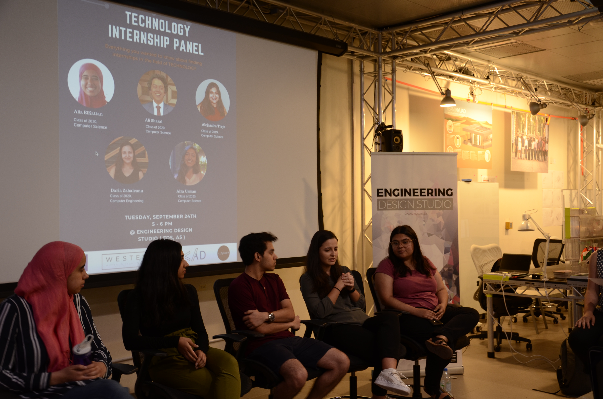
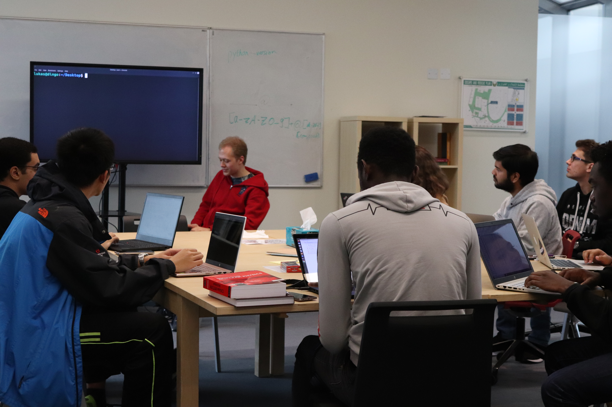

Cyber#
The first cyber security SIG at NYUAD.


We organize catch the flag challanges.
We organize ............
We organize .........
Cyber# is the first cyber security SIG at NYUAD. Cyber# is the place where students from all majors and backgrounds can learn about the benefits and consequences of cyber ethics, cyber law, cyber security etc. The SIG's mission is to offer workshops and trainings on security concepts, soft skills, team and leadership skills, to promote diversity and inclusion and to prepare students for careers in tech and cyber security through non-technical and technical trainings. We also organize panels and discussions on currently relevant topics of AI risks and security and other fun events. Some exciting events that we’ll organize this semester are: weekly CTF trainings, panel discussions, career advising and CTF competitions.